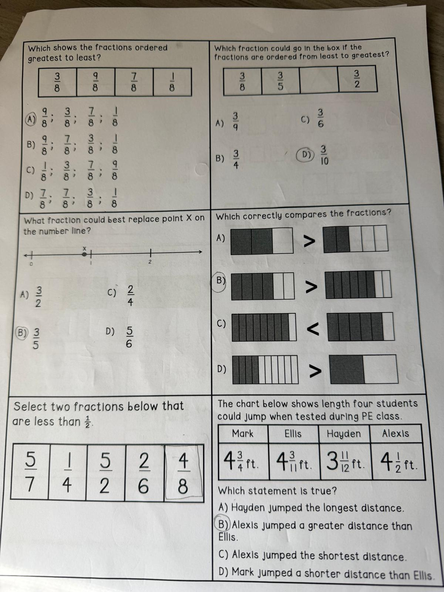

Which shows the fractions ordered greatest to least? (from: 3/8, 9/8, 7/8, 1/8)
Which fraction could go in the box if the fractions are ordered least to greatest?
3/8, 3/5, ___, 3/2
What fraction could best replace point X on the number line? (X is between 0 and 1, a little past the middle)
Which correctly compares the fractions? (bar models)
(Look at the picture to pick the one whose comparison symbol matches the shaded bars.)
Select two fractions below that are less than ½.
The chart shows length four students could jump in PE class.
| Mark | Ellis | Hayden | Alexis |
| 4 34 ft | 4 311 ft | 3 1112 ft | 4 12 ft |
Which statement is true?